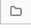

Tutorial: Run your first Delta Live Tables pipeline
This tutorial shows you how to configure a Delta Live Tables data pipeline from code in a Databricks notebook and to trigger an update. The instructions provided are general enough to cover most notebooks with properly-defined Delta Live Tables syntax.
You can use these instructions to schedule notebooks you created by following the Python or SQL Delta Live Tables tutorials, or import and use one of the notebooks provided on this page.
You can configure Delta Live Tables pipelines and trigger updates using the Databricks workspace UI or automated tooling options such as the API and CLI. Databricks recommends familiarizing yourself with the UI first, which can be used to generate JSON configuration files for programmatic execution.
Important
To start a pipeline, you must have cluster creation permission or access to a cluster policy defining a Delta Live Tables cluster. The Delta Live Tables runtime creates a cluster before it runs your pipeline and fails if you don’t have the correct permission.
To run this example, select
Hive metastoreas the storage option when you create the pipeline. Because this example reads data from DBFS, you cannot run this example with a pipeline configured to use Unity Catalog as the storage option.
Create a pipeline
Delta Live Tables creates pipelines by resolving dependencies defined in notebooks or files (called source code or libraries) using Delta Live Tables syntax. Each source code file can only contain one language, but you can mix libraries of different languages within your pipeline.
Click
 Workflows in the sidebar, click the Delta Live Tables tab, and click Create Pipeline.
Workflows in the sidebar, click the Delta Live Tables tab, and click Create Pipeline.Give the pipeline a name and click  to select a notebook.
Select Triggered for Pipeline Mode.
(Optional) Enter a Storage location for output data from the pipeline. The system uses a default location if you leave Storage location empty.
(Optional) Specify a Target schema to publish your dataset to the Hive metastore or a Catalog and a Target schema to publish your dataset to Unity Catalog. See Publish datasets.
(Optional) Click Add notification to configure one or more email addresses to receive notifications for pipeline events. See Add email notifications for pipeline events.
Click Create.
The system displays the Pipeline Details page after you click Create. You can also access your pipeline by clicking the pipeline name in the Delta Live Tables tab.
Start a pipeline update
To start an update for a pipeline, click the  button in the top panel. The system returns a message confirming that your pipeline is starting.
button in the top panel. The system returns a message confirming that your pipeline is starting.
After successfully starting the update, the Delta Live Tables system:
Starts a cluster using a cluster configuration created by the Delta Live Tables system. You can also specify a custom cluster configuration.
Creates any tables that don’t exist and ensures that the schema is correct for any existing tables.
Updates tables with the latest data available.
Shuts down the cluster when the update is complete.
Note
Execution mode is set to Production by default, which deploys ephemeral compute resources for each update. You can use Development mode to change this behavior, allowing the same compute resources to be used for multiple pipeline updates during development and testing. See Development and production modes.
Publish datasets
You can make Delta Live Tables datasets available for querying by publishing tables to the Hive metastore or Unity Catalog. If you do not specify a target for publishing data, tables created in Delta Live Tables pipelines can only be accessed by other operations within that same pipeline. See Publish data from Delta Live Tables pipelines to the Hive metastore and Use Unity Catalog with your Delta Live Tables pipelines.
Example source code notebooks
You can import these notebooks into the Databricks workspace and use them to deploy a Delta Live Tables pipeline. To learn more about the logic and syntax used in these notebooks, see Tutorial: Declare a data pipeline with Python in Delta Live Tables or Tutorial: Declare a data pipeline with SQL in Delta Live Tables.